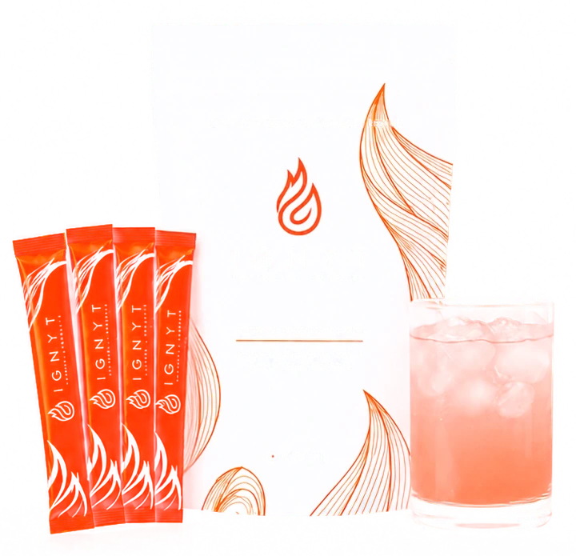

Quema grasa de forma natural
Apoya la quema de grasa, sin estimulantes.
Info de IGNYT
IGNYT es un potenciador metabólico en polvo de ORYGN. Un sobre, 8 oz (240 ml) de agua, menos de un minuto. Queda con sabor a arándano y manzana, más como una bebida fría que como un suplemento. Déjanos tus datos y te daremos seguimiento con la info.

Qué hace
No tiene estimulantes. IGNYT trabaja con señales que tu cuerpo ya usa. Esto es lo que apoya.
Apoya la quema de grasa, sin estimulantes.
Conserva lo que lograste en el gimnasio y apoya nuevo crecimiento.
Menos de ese pensar en comida todo el tiempo.
Energía pareja, y sin el bajón de las tres de la tarde.
Apoyo para un azúcar en la sangre más estable.
Apoyo para el revestimiento del intestino, que es la vía del GLP-2 en acción.
¿Quieres saber más de IGNYT?
Quién lo toma

Cuéntanos tu meta y te daremos seguimiento con la info.
Por qué tres vías
La mayoría de los productos de esta categoría trabajan en un solo receptor. Los péptidos de IGNYT trabajan en tres.
Apoyo para el apetito, la saciedad y el azúcar en la sangre. El que la mayoría de la gente ya conoce.
Apoya el revestimiento del intestino y qué tan bien absorbes los nutrientes de tu comida.
Manejo de la insulina y de la grasa. Trabaja junto con el GLP-1.
Déjanos tus datos y nosotros nos encargamos del resto.
La ciencia
Recibe la info y decide tú.
Sabor
Muchas personas dejan un suplemento porque se cansaron de tomarlo. IGNYT es un sobre en 8 oz (240 ml) de agua. Queda con sabor a arándano y manzana, y sabe mejor sobre hielo. Usa una botella mezcladora o un espumador de café pequeño. Con cuchara no se mezcla bien.
No toma mucho tiempo saber si lo seguirías tomando.
Una sola porción. Nada que medir.
Una botella mezcladora o un espumador de café. Con una cuchara no se logra.
Como un minuto, una vez al día.

Un formulario. Y luego te contactamos.
Preguntas
La info de IGNYT y respuestas a tus preguntas. Tu representante te explicará los detalles.
Por mensaje de texto o por email, con los datos que pongas en el formulario. Se usan para eso y para nada más.
Poco después de que envíes el formulario. Escríbenos por mensaje de texto desde la siguiente página y te respondemos más rápido.
No. Pídelo si lo quieres. Si no, ahí termina todo.
El formulario toma como un minuto.
Info de IGNYT
Llena tus datos y te daremos seguimiento con la info. Así sabrás si lo quieres.
Estas declaraciones no han sido evaluadas por la Administración de Alimentos y Medicamentos (FDA). Este producto no está destinado a diagnosticar, tratar, curar ni prevenir ninguna enfermedad.